Блог
Проекты CeramicaDecor: изразцовые облицовки, печи, банные порталы и барбекю-комплексы — с фотографиями реализованных работ.

Солнечная керамическая облицовка камина
Ярко-желтые изразцы для камина из проекта «Дачного ответа»: демонтаж старой конструкции, новая топка и индивидуальный цвет.

Сюжетная изразцовая облицовка
Как роспись превращает печь в содержательный арт-объект и сохраняет в керамике историю, символы и настроение дома.

Печь в старорусском стиле
Печь-камин с духовым шкафом, ручной росписью, усиленным фундаментом и безопасной конструкцией для каркасного дома.

Белая банная печь в русском стиле
Изразцы с румпой, коллекция «Русская этника», белая глазурь и рекордные сроки изготовления и монтажа.

Изразцовый барбекю комплекс в беседке
Летняя кухня с мангалом, казанной плитой, винным шкафом, аргентинским грилем и облицовкой «Версаль».

CeramicaDecor на выставке "Салон каминов и печей отопления - 2023" в Крокус Экспо.
Как CeramicaDecor представила изразцовую облицовку банных печей и коллекции изразцов на выставке в Крокус Экспо.

Ярославский изразец: уникальный и самобытный
Почему Ярославль стал центром керамики, три вида храмовых изразцов, символика птицы Сирин и цветочная розетка — и где увидеть и заказать ярославский изразец сегодня.

Уильям Френд Де Морган: самобытная керамическая посуда и изразцовые панно мастера-изобретателя
Художник-керамист движения «Искусства и ремёсла», раскрывший секрет сияющего люстра и создавший самобытные изразцовые панно.

Уильям Моррис и движение "Искусств и ремесел": "эпоха возрождения" для декоративно-прикладного искусства
Как движение «Искусства и ремёсла» возродило ценность ручного труда и вернуло керамику в интерьеры английских домов.

Творчество династии Гребер - эталон каминной и архитектурной керамики в стиле ар-нуво
Керамическая Мануфактура Бове династии Гребер: фасадная керамика, камины и порталы, ставшие эталоном стиля ар-нуво.

Печи и камины Баварии: изразец, мейсенский фарфор, мрамор и немного чугуна
Изразцовые печи и фарфорово-мраморные камины дворцов и замков Баварии: от Траусница до Херренкимзее.

Немецкий изразец: формирование традиционных черт в рамках сырьевых особенностей и экономических условий
Как местное сырьё и экономика сформировали облик немецкого изразца: от каменной керамики средневековья до мейсенского кафеля.

Изразцовая отделка камина в 5 самых модных стилях интерьера 2017 года
Пять актуальных стилей — скандинавский, прованс, лофт, бохо и ар-деко — и подходящая для каждого изразцовая отделка очага.

Облицовка старинных каминов мистического замка Глэмис
Экскурсия по залам шотландского замка Глэмис и облицовке его старинных каминов — от готической гостиной до спален.

Каминные облицовки по проектам Ф. О. Шехтеля: от романского средневековья до московского модерна
Камины Шехтеля в московских особняках: от средневековых рыцарей и грифонов до природных линий модерна.

Все краски московского модерна в фасадной майолике гостиницы Метрополь
Более двух десятков майоликовых панно Абрамцевской мастерской на фасаде Метрополя — энциклопедия московского модерна в керамике.

Бернард Лич: слияние Востока и Запада в искусстве керамики
Как британский керамист соединил традиции Китая, Кореи и Японии с европейской школой и доказал, что искусство керамики не имеет границ.

Такие разные и такие выразительные национальные печи: материал облицовки, форма, конструкция
Как культура, климат и геология сформировали облик национальных печей России, Скандинавии, Германии и Азии.

Старинные печи с изразцами: фото особенных творений всех времен
Изразцовые печи замков Яунмоку и Орлик, Крестовой палаты и монастырей: сюжеты, история и народная мудрость в керамике.

Красота исконно русских орнаментов в росписи фаянса и изразцов гжель
Откуда пришёл сине-голубой орнамент гжели, как его наносят вручную и где сегодня увидеть и купить керамику с этой росписью.

Кристофер Грудер: необычное изготовление изразцов для фантазийных панно
Керамист Крис Грудер лепит рельефные изразцы в технике «негатива» из ила и собирает из них фантазийные панно с природными мотивами.

Старинные изразцовые камины и печи Санкт-Петербурга с двух ракурсов обзора
Обзор старинных изразцовых печей и каминов Петербурга — от дворцов и усадеб до парадных обычных жилых домов.

Орнаменталистика русского изразца
Символы, фигуры, птицы и цвета народной росписи изразцов — какой смысл вкладывали в них русские мастера.

Ярославские изразцы в фасадном церковном убранстве
Терракотовые, муравленые и полихромные изразцы в декоре ярославских храмов XVII века: от Рождества Христова до Иоанна Златоуста.

Голландские изразцы - душа Нидерландов в сине-голубой росписи по белоснежной керамике
История, технология и облик бело-голубых делфтских изразцов, покоривших Европу и Россию со времён Петра I.

Мауриц Корнелис Эшер: логические парадоксы и иллюзии в рисунках изразцов и мозаике
Как научный подход, симметрия и замощение плоскости превратили гравюры Эшера в рисунки изразцов и мозаичные панно.

Куракинская керамика - ремесло, возрожденное по традициям предков
Как в вологодской деревне Куракино художница Нина Мишинцева возродила изготовление изразцов и керамики по технологиям мастеров XVI-XVII веков.

Тайна финских кафельных печей завода Вильгельма Андстена
Кафельные печи финской фабрики Вильгельма Андстена в усадьбах, храмах и на вокзалах России и Финляндии.

Современные изразцы и мозаика в интерьере: трансформация традиционной керамики в новые идеи
Как керамика — панно, мозаика, декоративные водопады и отделка — трансформируется в практичные решения для современного интерьера.

Алькасар - многовековой памятник истории керамического искусства
История испанских Алькасаров — Альгамбры и Севильского замка — и их керамическая отделка азулежу и изразцами, пережившая смену эпох и правителей.

Дровяные камины - долгий путь от древности до современности
Путь дровяного камина от древнего очага и римских терм до английских, рамфорда и альпийских конструкций.

Печи-голландки: от истории к современности
История и устройство печи-голландки: как складывались её особенности, чем она хороша и в чём её слабые стороны.

Печи-барбекю - от простейшей решетки до полноценных печных комплексов
От первых решеток индейцев Перу и котла Джорджа Стивена до садовых барбекю-комплексов и беседок из кирпича и камня.

Камин в доме - теплая и уютная атмосфера
Виды каминов по расположению и обзор стилей — от деревенского и классики до барокко, хай-тека и декоративных моделей.

Электро- и биокамины - живой огонь в квартире
Электро- и биокамины дают живой или имитированный огонь без дымохода — как выбрать между ними в городской квартире.

Михаил Александрович Врубель: эмоциональная и чувственная керамика
Керамика Врубеля: майоликовые панно, изразцовые камины и декоративные фигуры из мастерской Абрамцево.

Изразцовые печи дворца Юсуповых в Москве
Фотоэкскурсия по залам московского дворца Юсуповых: изразцовые печи XVII–XVIII веков в Тронном зале, Трапезной, Портретной комнате и Гербовом зале.

Королевский замок Блуа: страницы истории в облицовке каминов
Три крыла замка Блуа — готика, ренессанс и барокко — и камины, ставшие живой летописью французской истории.
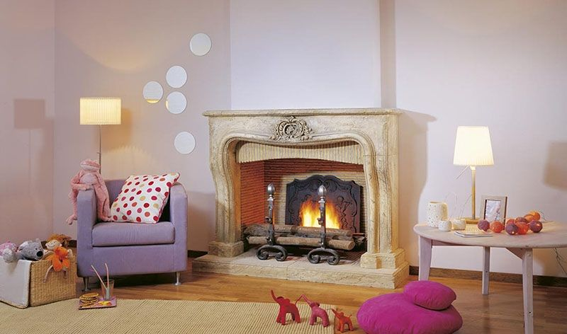
Антикварные камины - историческая и художественная ценность в вашем доме
Чем определяется ценность антикварного камина и как стили от готики до модерна отражаются в его облицовке.
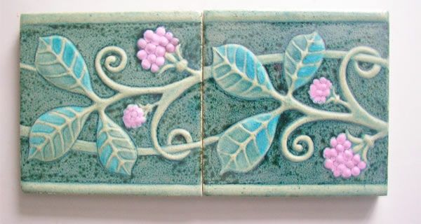
Керамика модерна - яркое подтверждение мирового единства языка искусства
Природа как источник вдохновения: декоративная керамика, изразцовые печи и фасадная майолика в стиле модерн разных стран.
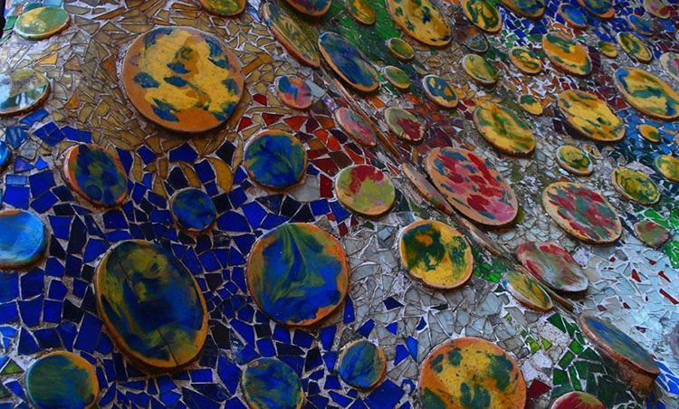
Антонио Гауди: архитектурные шедевры в россыпи керамических и стеклянных осколков
Фасадная керамика и мозаика-тренкадис в шедеврах каталонского зодчего: дома Бальо и Висенса, дворец и парк Гуэля в Барселоне.
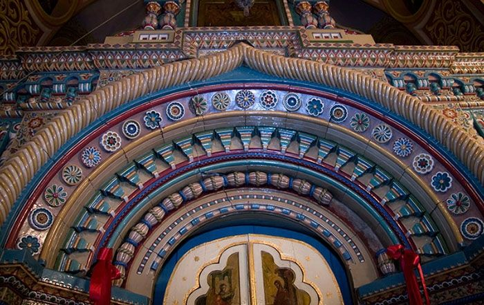
Символизм христианства через керамическое церковное убранство
От фасадных изразцов до фаянсовых иконостасов: как керамика стала главным символическим языком русского церковного убранства.
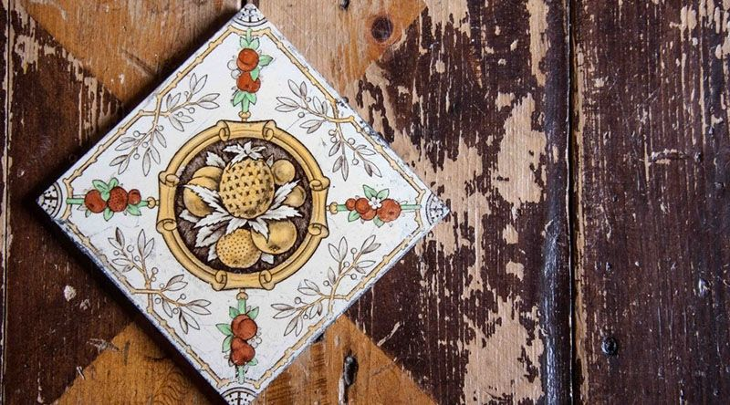
Английская керамика фабрики Минтон под влиянием смены поколений
История фабрики Минтон: от Томаса Минтона до викторианских шедевров керамики, мозаики и техники «pâte-sur-pâte».
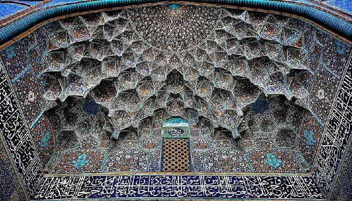
Искусство керамики стран мусульманского мира
Как ислам, его традиции и запреты сформировали керамику Востока — от люстровой посуды до изразцового убранства мечетей.
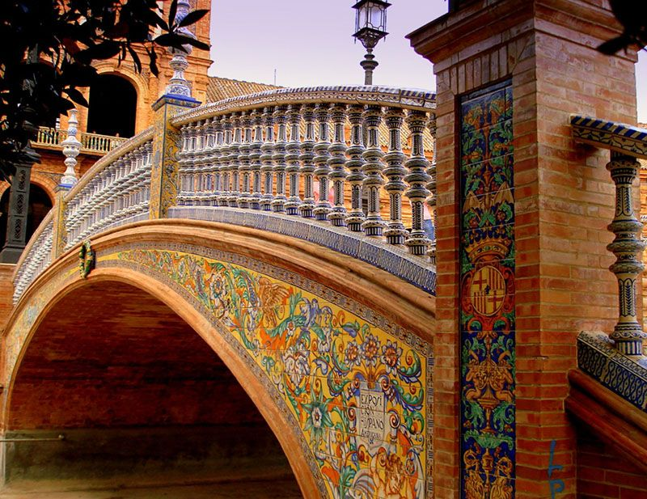
Новый взгляд на использование фасадной керамики
Как фасадные керамические панно Европы служили инструментом просвещения и украшали даже промышленные здания.
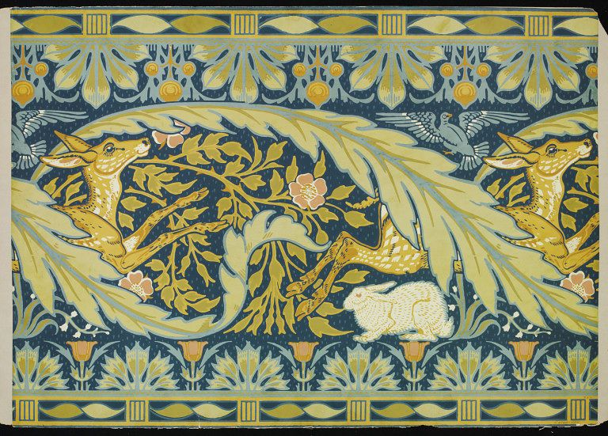
Сказочный мир иллюстраций и керамики Уолтера Крейна
Иллюстратор детских книг, ставший художником-керамистом: плитка, вазы и фризы Уолтера Крейна для Wedgwood, MAW&Co и Pilkington.
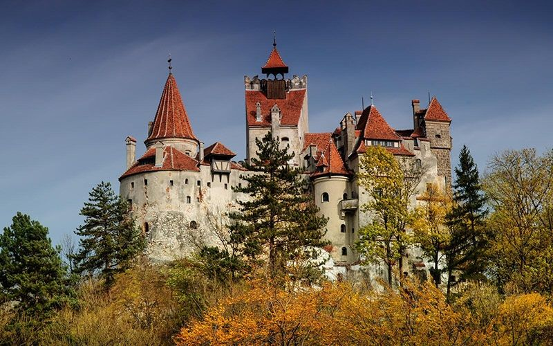
Разнообразие и великолепие изразцовых печей таинственного замка Бран
Десятки самобытных изразцовых печей румынского замка Бран: конструкции, отделка и роспись от столовой до комнаты короля Фердинанда.
Замок Кардифф - образец керамики в каждом штрихе отделки
Как изразцы, плитка ручной росписи и мозаика украшают залы и камины Кардиффского замка в Уэльсе.
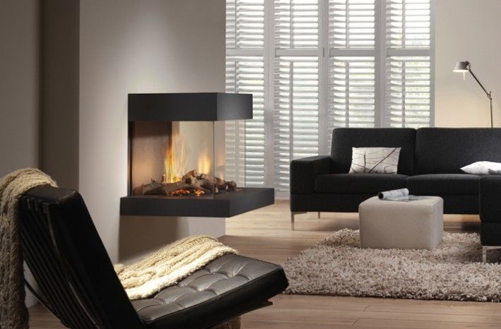
Камины в интерьере - классическая роскошь в современном мире
Как выбрать камин под стиль гостиной: классика, ампир, деревенский стиль и роскошь изразцовой облицовки ручной работы.
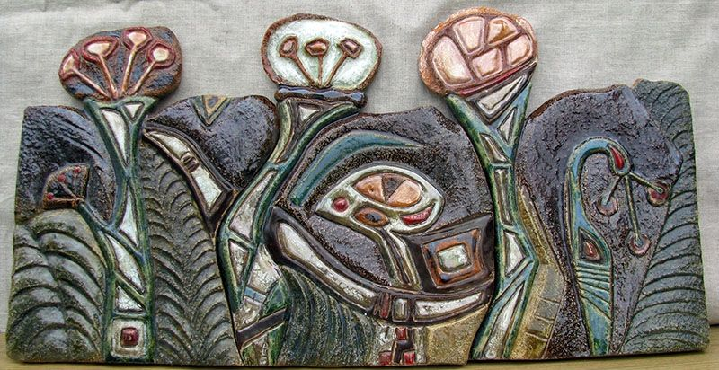
Эксклюзивная керамическая облицовка
Керамика ручной работы в технологии лепки на пластах глины: авторский декор в единственном экземпляре без форм и моделей.
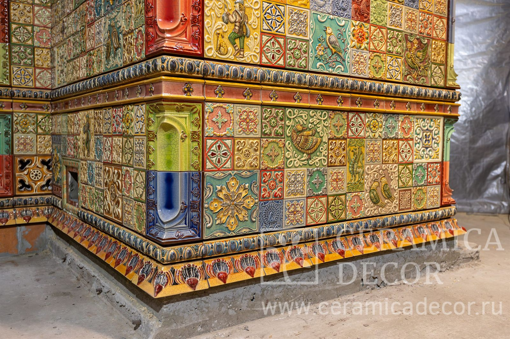
История изразцовых печей
Как изразцовые печи появились на Руси, менялись от 15 к 19 веку и что представляют собой сегодня.
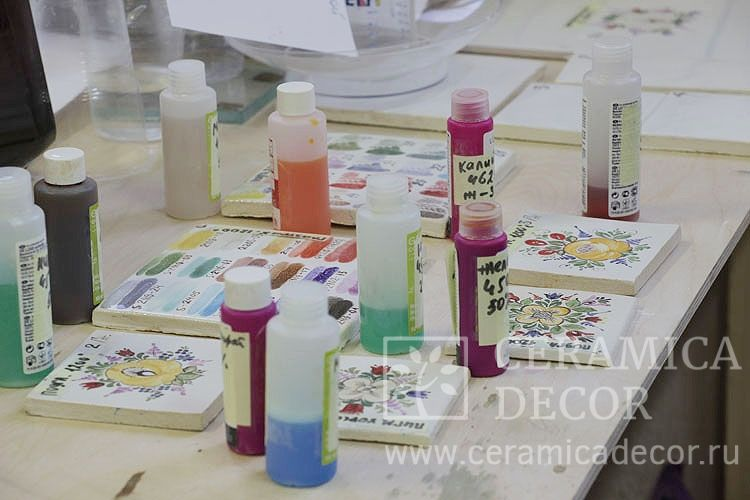
Надглазурная роспись готовой плитки
Надглазурная роспись по заводской плитке: суть техники, её плюсы и минусы и когда она выручает при ограниченном бюджете.
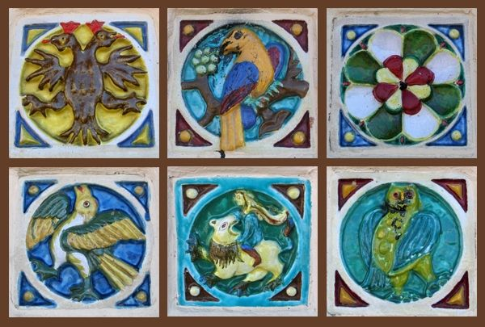
История изразца
Путь русского изразца от терракотовых плиток XV века и ярославского расцвета до петровской моды и мастерских наших дней.
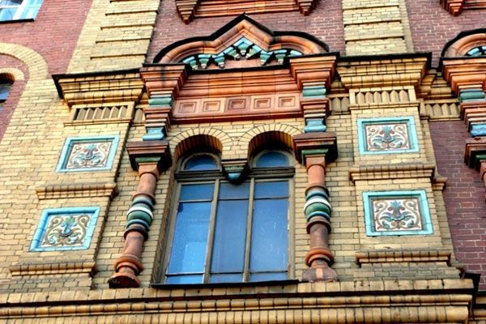
Керамический фасад
Как керамика украшала фасады зданий: от домонгольской Руси и рельефных поясов до современного архитектурного декора ручной работы.
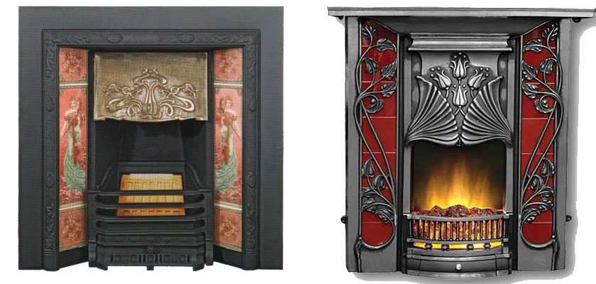
Камины в стиле Арт-Нуво
Как флореальный модерн рубежа XIX–XX веков преобразил изразцовые камины: текучие линии, цветочный декор и мастера арт-нуво.
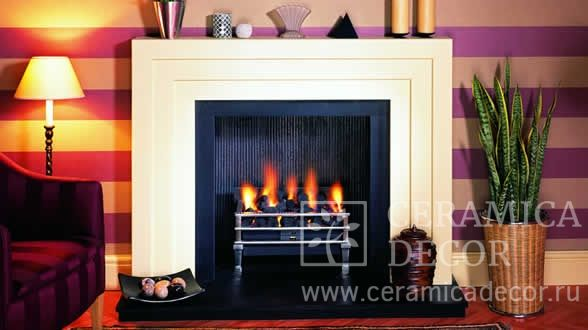
Камины в стиле Арт-Деко
Роскошь, геометрия и дорогие материалы: как стиль арт-деко 1920-х годов проявился в облицовке каминов и изразцовых порталов.
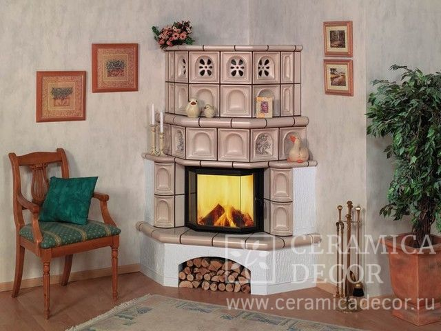
Угловые камины в интерьере
Компактные угловые камины экономят пространство, обогревают сразу два помещения и вписываются в любой интерьер — от классики до модерна.
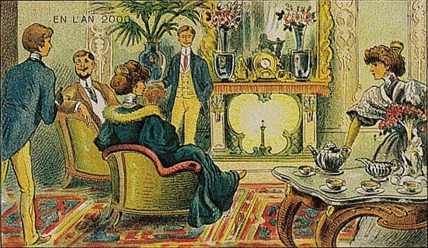
Камины двадцатого века: преображение стилей и поиск новых декоративных решений
Как за одно столетие камин прошёл путь от чугуна викторианской эпохи через арт-деко к лаконичным решениям современности.
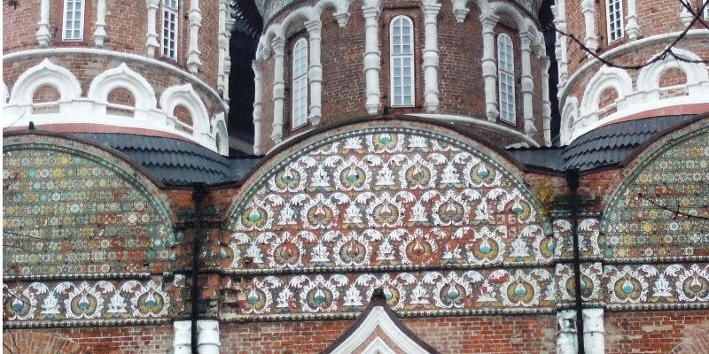
Изразцы святых стен - творения Степана Полубеса
Как белорусский мастер Степан Полубес принёс на Русь многоцветный рельефный изразец и узор «павлинье око».
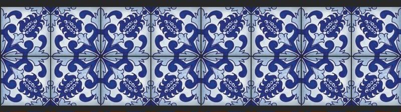
Страна керамики и искусство веков
Азулежу — керамические изразцы, превратившие Португалию в страну расписных фасадов и панно, от XV века до наших дней.
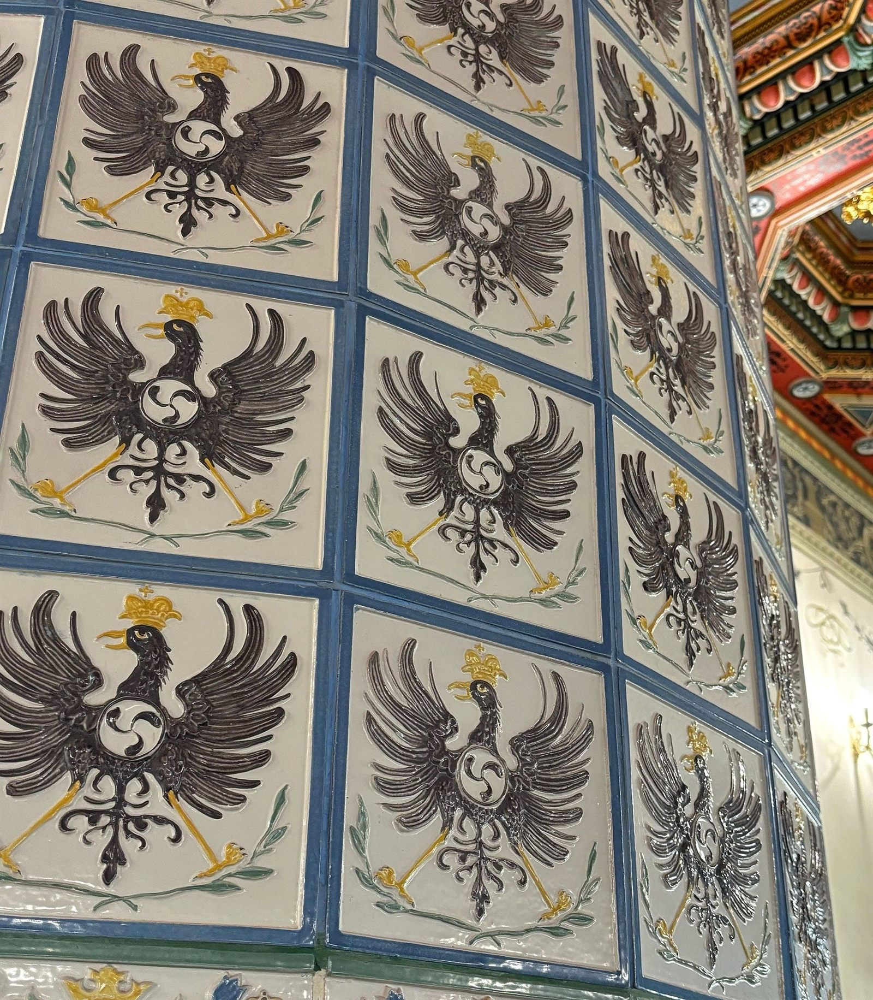
Кафля или белорусский изразец как особая веха развития искусства керамики
Путь «кафли» от горшковых изразцов Полоцка до майолики ценинников и её влияние на русское изразцовое искусство.
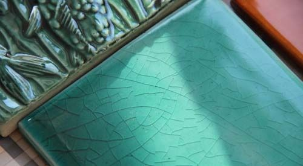
История глазури и эмали - основы шика, блеска и многоцветности керамического изразца
Путь глазури и эмали от Древнего Египта и Китая до русских муравленых изразцов и лиможских мастеров.
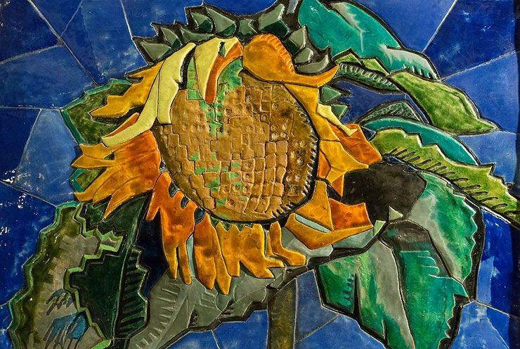
Филиппов Алексей Васильевич - художник-керамист, историк, реставратор и новатор в одном лице
Художник артели «Мурава», историк и реставратор русского изразца, новатор керамической лаборатории Академии архитектуры СССР.
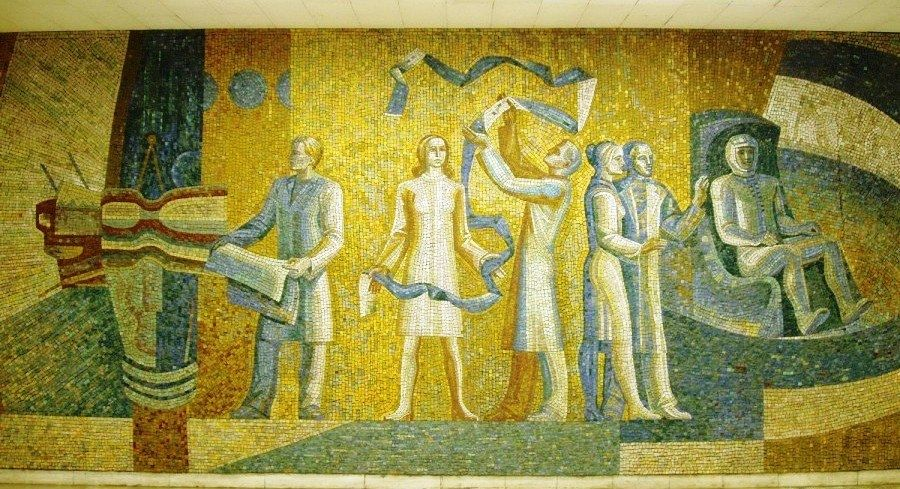
Советский реализм в искусстве мозаики
Как соцреализм и идеология СССР отразились в мозаичных панно: спорт, космос, единство народов и «Карта индустриализации».
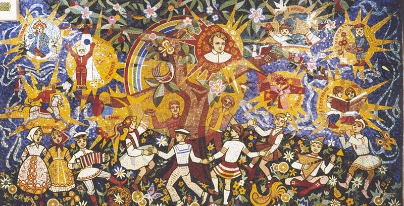
Национальные краски в советских мозаичных панно
Как самобытность республик СССР — от РСФСР до Грузии и Узбекистана — проступала в сюжетах и красках мозаичных панно.
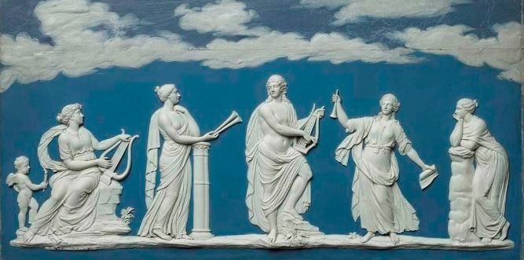
Керамика непоколебимой воли и жажды исследований Джозайи Веджвуда
Путь английского керамиста от подмастерья до создателя сливочного фаянса, базальтовой и яшмовой массы.
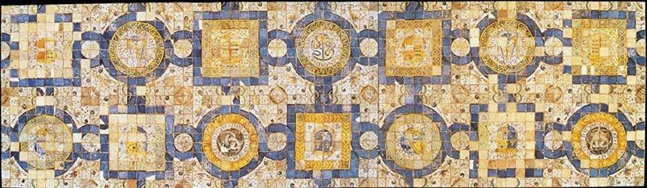
Творец керамики французских замков XVI века - Массео Абакен
Руанский керамист XVI века, чьи геральдические и религиозные панно украшали французские замки, а работы хранят Лувр и музеи Ренессанса.
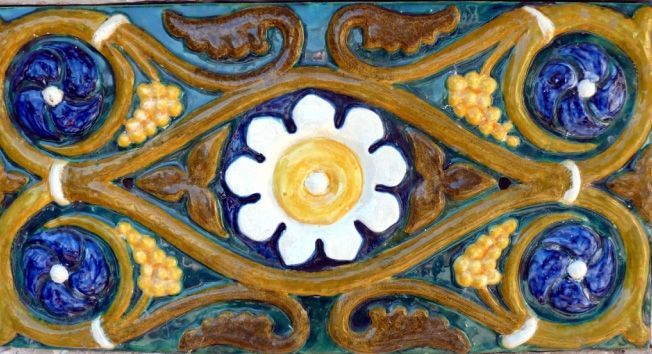
Мир керамики Петра Кузьмича Ваулина
Художник-керамист и химик-технолог, создатель металлизированной глазури: путь от Абрамцево до мастерских «Гельдвейн-Ваулин».
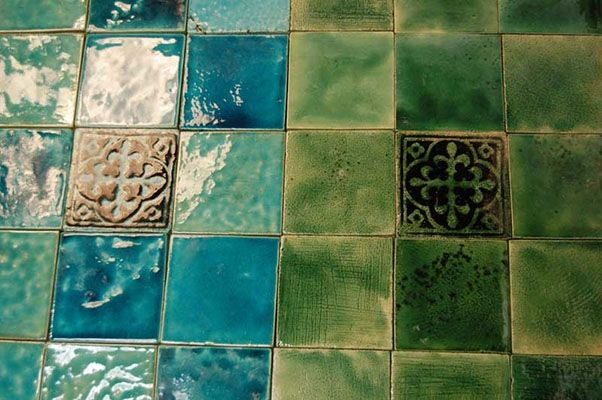
Английская плитка ручной работы
Классическое ремесло Англии: от средневековой майолики и рельефных плиток до современных фабрик Original Style и Winchester.
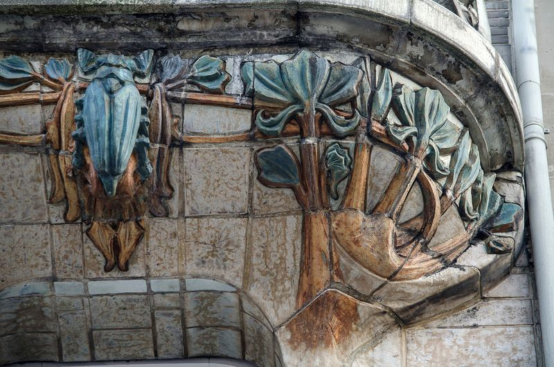
Александр Биго: путь к искусству керамики
История физика и химика, ставшего одним из главных керамистов ар-нуво и облицевавшего фасады домов Парижа.
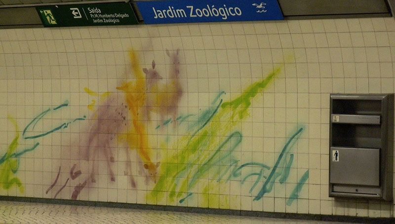
Керамическая отделка метрополитена: турне по подземке
Путешествие по керамике и мозаике метро Москвы, Стокгольма, Парижа, Неаполя, Лиссабона, Стамбула и Будапешта.
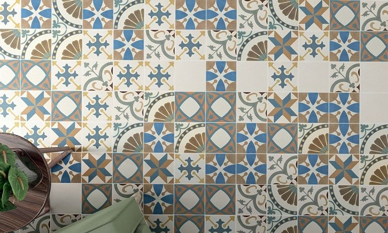
Метлахская плитка - универсальный инструмент для воплощения самых смелых фантазий в дизайне
Как марка Villeroy & Boch создала прочную многоцветную плитку, украсившую Кёльнский собор и полы «Титаника».
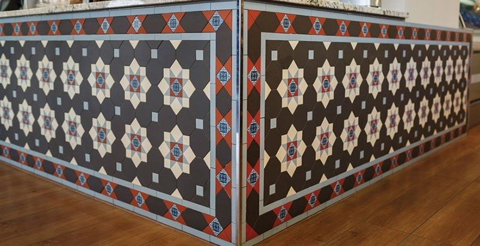
Фабрика Winckelmans - европейский лидер по изготовлению метлахской плитки
История французской фабрики Винкельманс и её знаменитой мелкоформатной метлахской плитки, украшающей престижные здания по всему миру.
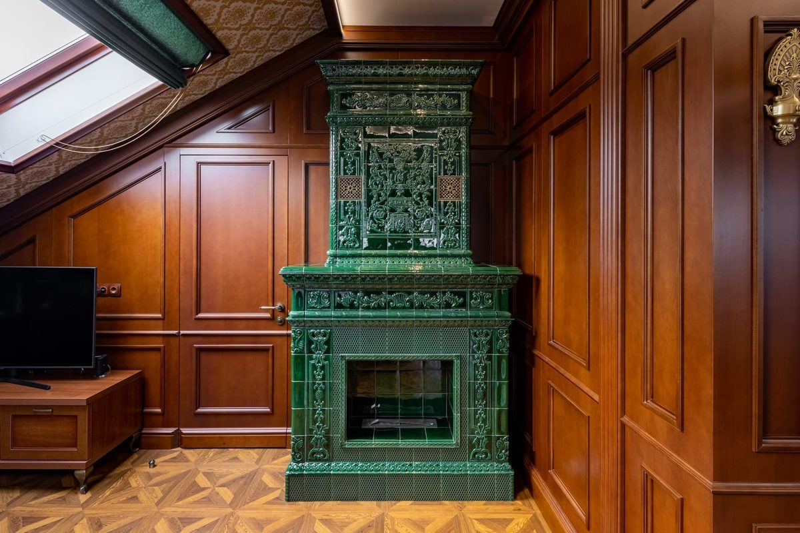
Типы изразцовых каминов и печей CeramicaDecor
Классификация каминов-порталов, каминных печей и изразцовых печей: устройство, топки, облицовка и ориентировочная стоимость.
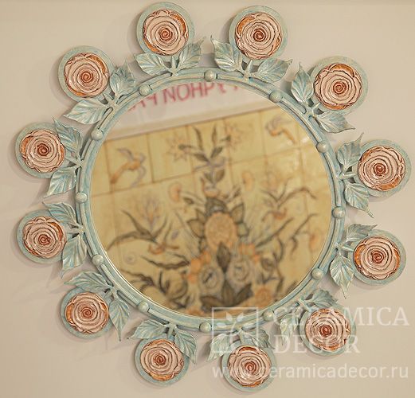
Эксклюзивные рамы для зеркал с элементами из керамики CeramicaDecor
Зеркала ручной работы с керамическими элементами и авторский профиль «КерамикаГласс» от CeramicaDecor.
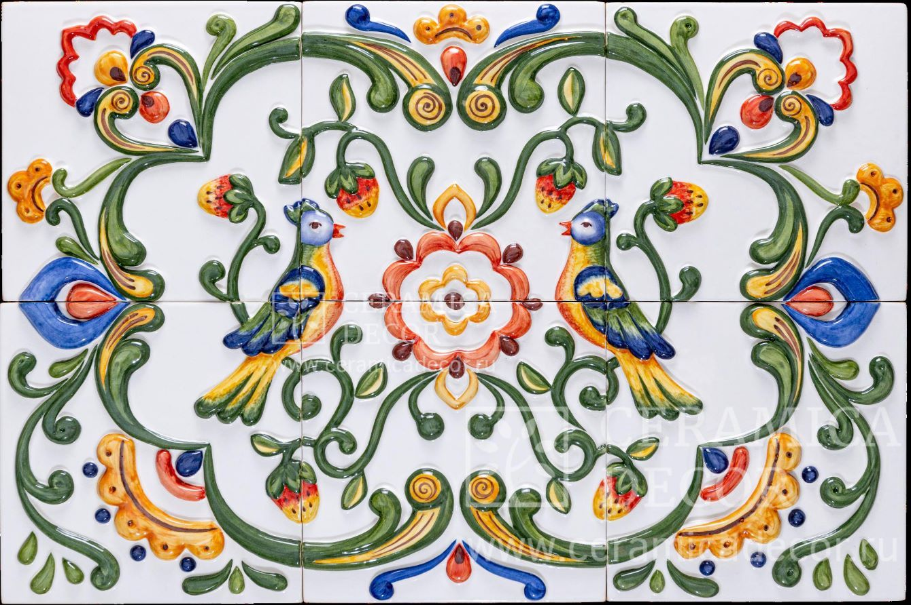
Керамика от кухонного фартука до фасада дома CeramicaDecor
Где ещё применяют керамику ручной работы: фартук, мебель, рамы зеркал, стены, панно, фасад, столешницы и лестничные ступени.
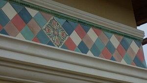
Фасадная керамика для эксклюзивной отделки домов от компании CeramicaDecor
Керамическая облицовка фасадов ручной работы: изразцы и панно для эксклюзивной отделки коттеджей, особняков и дач.
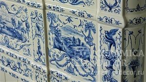
Роспись по Вашей плитке CeramicaDecor
Художественная роспись вашей уже купленной керамической плитки по индивидуальному эскизу — услуга студии CeramicaDecor.
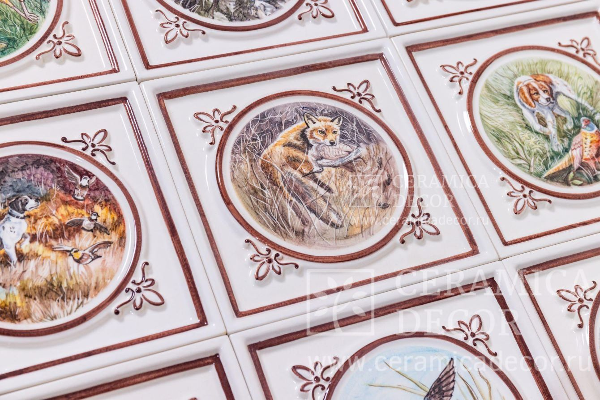
Наша живопись по керамике CeramicaDecor
Художественная мастерская CeramicaDecor расписывает керамику вручную — от панно до вставок для кухонных фартуков.
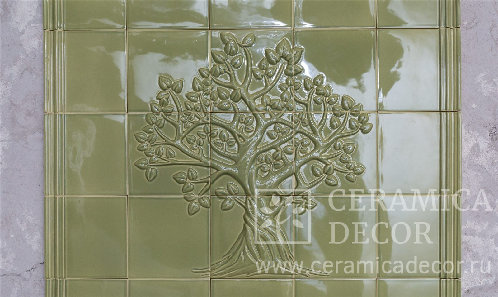
Керамические панно ручной работы CeramicaDecor
Художники CeramicaDecor расписывают керамические панно вручную и обжигают при 1200 °C — от единой картины до композиции из плиток.
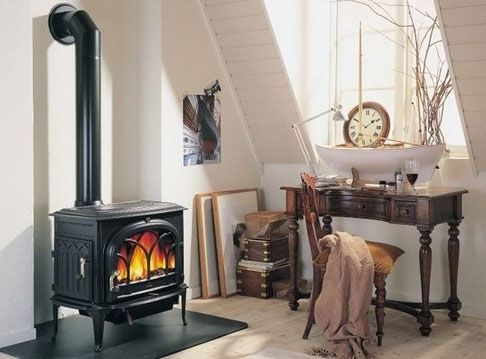
Буржуйка: от возникновения до наших дней
История печки-буржуйки от буржуазной революции до наших дней и обзор её современных декоративных воплощений.
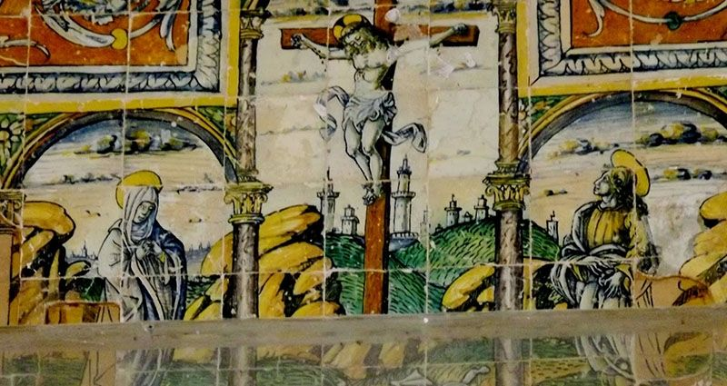
Никулосо Франциско Пизано - признанный гений керамического искусства
Итальянский мастер майолики XV–XVI веков, основавший пизанский стиль полихромной росписи изразцов в Севилье.
Вместо старых изображений оставлены дизайнерские заглушки. При интеграции программист сможет заменить их реальными фотографиями, датами, авторами и SEO-полями из внутренней системы.